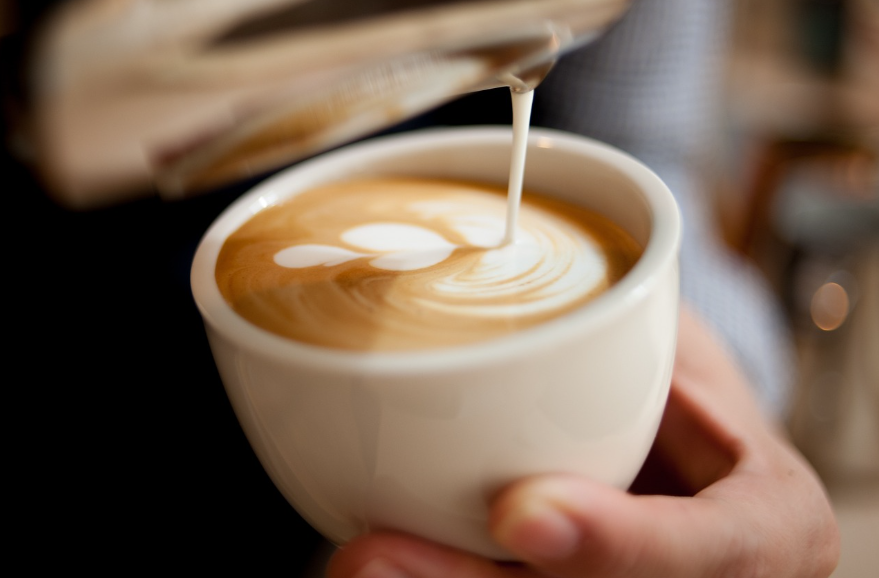

Ingredientes:
O café latte é uma bebida de origem italiana, feita com café expresso,
leite vaporizado e espuma de leite. O termo vem do italiano caffè latte,
que significa literalmente "café e leite".
Para fazer um café latte, pode seguir os seguintes passos:
• Preparar o café expresso
• Vaporizar o leite com um espumador de leite, mixer ou prensa francesa
• Adicionar o café à xícara
• Acrescentar o leite de forma inclinada
• Derramar a espuma do leite
• Finalizar com a latte art, ou seja, algum tipo de desenho usando o próprio leite
350ml - R$ 8,90
473ml - R$11,70
650ml - R$14,50